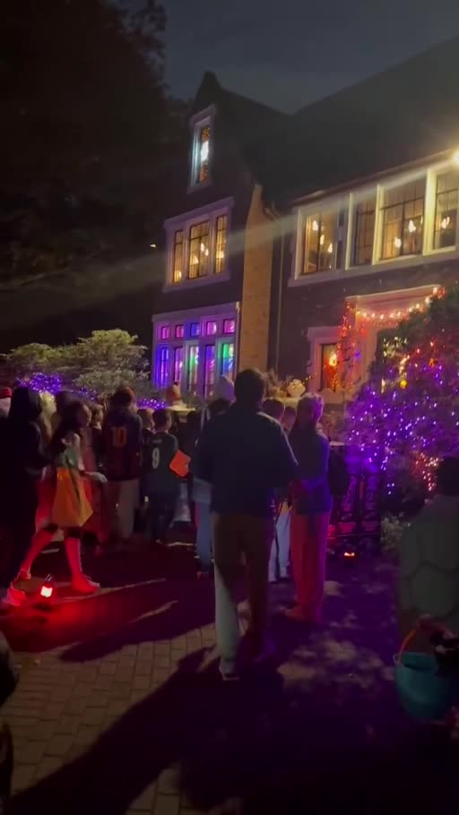
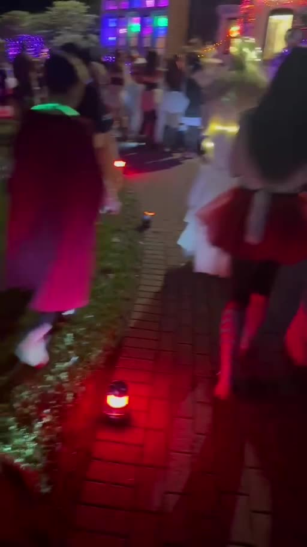
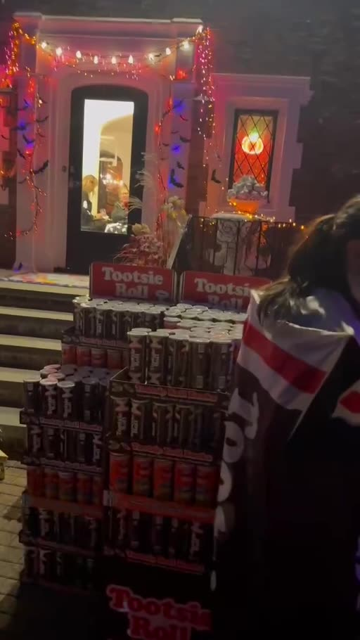
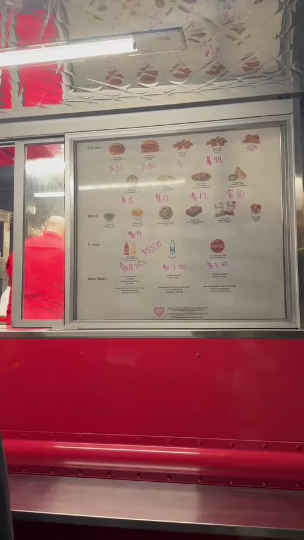
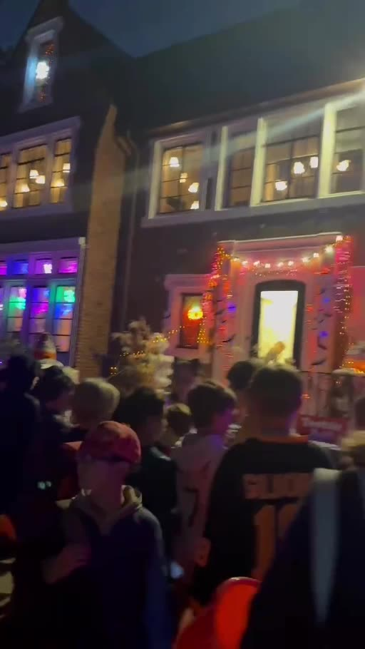
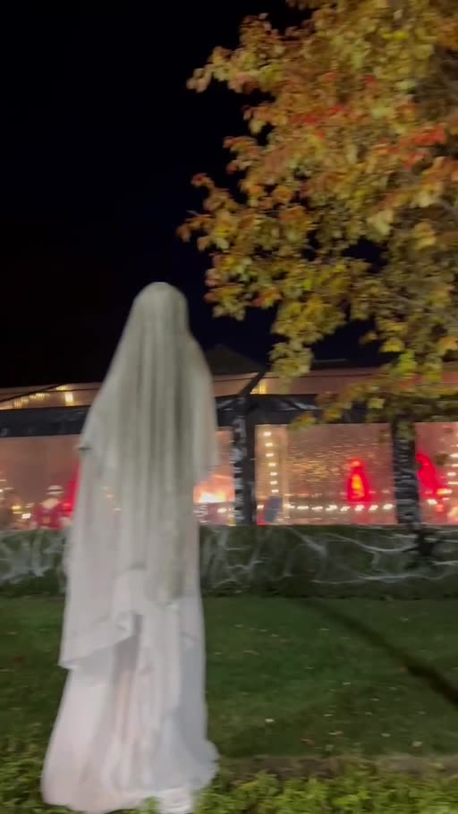

Weston“糖王一家”点亮了整个社区的万圣节之夜
The “Candy King” Family Lights Up Halloween for the Weston-Area Community
糖果成山、餐车送暖、冰激凌和节日美食齐聚——一次慷慨分享，让万圣节的快乐传遍邻里。
Candy towers, festive food and a brightly decorated home turned Halloween into a celebration of neighborhood generosity.

10月31日万圣节之夜，Wellesley Hills 一户被 Weston 地区华人居民亲切称为“糖王家”的家庭，凭着满满的糖果、节日布置和慷慨的美食招待，在邻里之间引发热烈讨论。对许多孩子来说，这是寻找糖果的夜晚；而对在场的家庭来说，这里更像一场向整个社区敞开大门的节日聚会。
灯光、人群与孩子们的欢呼
居民分享的现场视频呈现出格外热闹的场面：住宅外墙与庭院闪烁着紫色、红色和橙色的万圣节灯光，装扮成各种角色的孩子们与家长穿过人群，沿着步道走向布置一新的门廊。镜头中，邻居们不断停下脚步观看、拍照，节日气息几乎从画面中溢出来。
不只是讨糖：像一场节日嘉年华
最引人注目的是门口大批摆放整齐的糖果，现场视频还记录了餐车和美食供应的场景。Weston 社区微信群成员在10月31日傍晚分享了“免费冰激凌”“免费 Chick-fil-A”等消息，并称现场还有热狗、炸鸡及其他饮品，由主人招待。上述具体供应品类来自居民即时分享，并非逐项独立核实的活动清单。
当一场普通的挨家挨户要糖活动，变成灯光、糖果、餐点和邻里互动齐聚的狂欢，最令人印象深刻的，已不再是拿到了多少糖果，而是主人愿意花心思，把快乐送给每一位到来的邻居。
一户人家的热情，成为邻里的共同记忆
当天晚上，社区群里有人实时上传视频、询问地点，也有人呼唤朋友带孩子赶来。热心居民的口耳相传，让这处节日现场成为附近家庭谈论的话题。
值得一提的是，现场位于 Wellesley Hills，并非 Weston 镇内；不过，它在 Weston 邻里社群中广泛传播，让两个相邻社区的家庭共同分享万圣节的欢乐。Weston Life 记录这份民间自发的慷慨，不是为了比较谁家的糖果最多，而是为了记住这种用行动连接邻居的社区精神。
一个家庭点亮一座房子，一份善意温暖一群邻居——这就是今年万圣节最可贵的风景。
On Halloween night, October 31, a Wellesley Hills home affectionately nicknamed the “Candy King” house by members of the Weston-area Chinese community became a much-talked-about neighborhood destination. With an illuminated facade, generous sweets and festive hospitality, the gathering felt like more than a traditional stop for trick-or-treating.
Lights, costumes and a memorable evening
Resident-shared videos show purple, orange and red decorations glowing across the home and garden. Costumed children and accompanying adults gathered along the walkway, while visitors stopped to admire the decorations and capture the moment.
More than a handful of candy
Footage shows large displays of sweets near the front entrance, as well as a food truck. Posts shared in a Weston neighborhood chat on October 31 mentioned complimentary ice cream, Chick-fil-A food and other refreshments, including hot dogs and chicken. Those menu details are attributed to residents' posts and have not been individually verified by Weston Life.
What made the evening special was not simply the quantity of candy or food. It was the idea that one household could turn a familiar holiday tradition into an occasion for neighbors to meet, smile and celebrate together.
Community spirit crossing town lines
The gathering took place in Wellesley Hills, not within the Town of Weston. Yet the videos and recommendations circulated through the Weston community, reflecting the close ties between neighboring towns.
The home became part of this Halloween's shared community memories: bright lights, happy faces and a simple act of making others feel welcome.
📷 真实现场影像 · 更多照片
📷 More real photos from Halloween night




